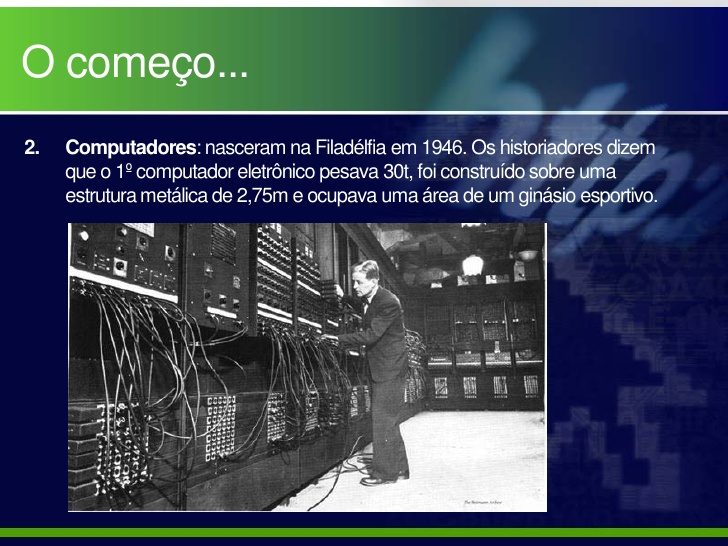

Breve Historia sobre a Internet
Introdução origem
A internet foi criada em 1969, nos Estados Unidos. Chamada de Arpanet, tinha como função interligar laboratórios de pesquisa. Naquele ano, um professor da Universidade da Califórnia passou para um amigo em Stanford o primeiro e-mail da história.
Essa rede pertencia ao Departamento de Defesa norte-americano. O mundo vivia o auge da Guerra Fria. A Arpanet era uma garantia de que a comunicação entre militares e cientistas persistiria, mesmo em caso de bombardeio. Eram pontos que funcionavam independentemente de um deles apresentar problemas.
A partir de 1982, o uso da Arpanet tornou-se maior no âmbito acadêmico. Inicialmente, o uso era restrito aos EUA, mas se expandiu para outros países, como Holanda, Dinamarca e Suécia. Desde então, começou a ser utilizado o nome internet.
Por quase duas décadas, apenas os meios acadêmico e científico tiveram acesso à rede. Em 1987, pela primeira vez foi liberado seu uso comercial nos EUA.
Desenvolvimento da Internet
Em 1992, começaram a surgir diversas empresas provedoras de acesso à internet naquele país. No mesmo ano, o Laboratório Europeu de Física de Partículas (Cern) inventou a World Wide Web, que começou a ser utilizada para colocar informações ao alcance de qualquer usuário da internet.
Desde então, a difusão da rede foi enorme. Hoje, a internet tem mais de 250 milhões de usuários em todo o mundo. Até o final de 2004, o tráfego mundial de e-mails deverá estar em torno de 35 bilhões de mensagens diárias.
Quase 90% dos usuários de internet estão nos países industrializados. Os EUA e o Canadá respondem por 57% do total, segundo relatório da Organização Internacional do Trabalho.
No Brasil, a exploração comercial foi liberada em 1995. Universidades como as federais do Rio Grande do Sul e do Rio de Janeiro estavam conectadas à rede desde 1989. A Fapesp (Fundação de Amparo à Pesquisa de São Paulo) conectou-se um ano depois.
Principais sistemas e aplicativos de Internet dos últimos anos:
- Segunda metade da década de 1990: ICQ (comunicador on line), Messenger (comunicador on line), Ebay (espécie de mercado virtual), Google (sistema de busca), Yahoo! (sistema de busca), Napster (troca de músicas), Netflix (sistema de vídeos on line).
- - 2002 - lançamento do Xbox Live: plataforma de jogos on line da Microsoft, que usa a rede de Internet.
- - 2003 - lançamento do Skipe: para ligações telefônicas pela rede da Internet.
- - 2005 - lançamento do Youtube (sistema de compartilhamento de vídeos pela Internet).
- - 2009 - lançamento do WhatsApp (aplicativo de troca de mensagens, fotos e vídeos por smartphone).
- - 2010 - lançamento do Instagram (rede social de compartilhamento de fotos)
- - 2011 - lançamento do Snapchat (aplicativo para smartphone de troca de mensagens, através de imagens)
- - 2012 - lançamento do Tinder (plataforma voltada para encontrar pessoas que buscam encontros românticos).
- - Em 2016, 63,6% da população brasileira (acima de 9 anos) tiveram acesso a Internet (fonte: Pnad 2016 - IBGE).
- - Em 2014, 77,9% dos brasileiros (acima de 9 anos) acessaram a Internet através de um aparelho smartphone.